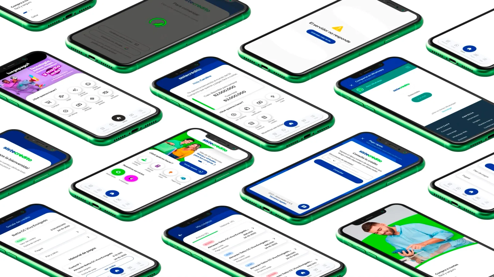
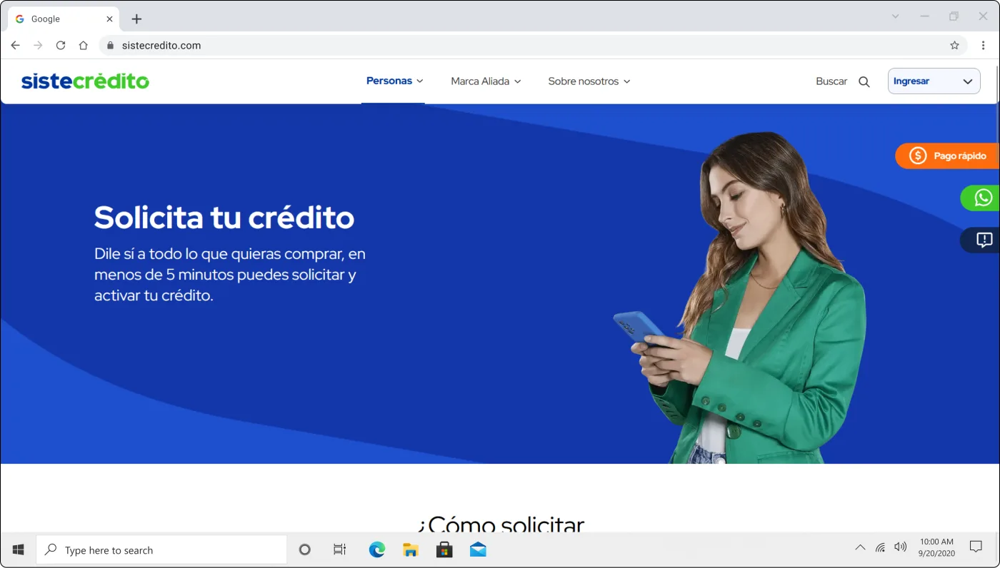
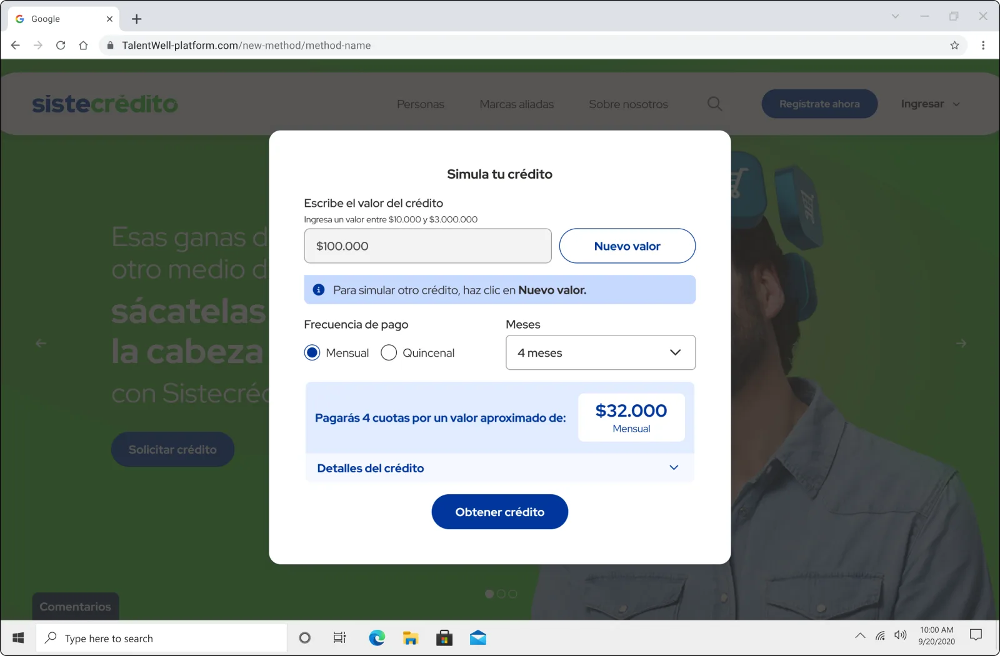
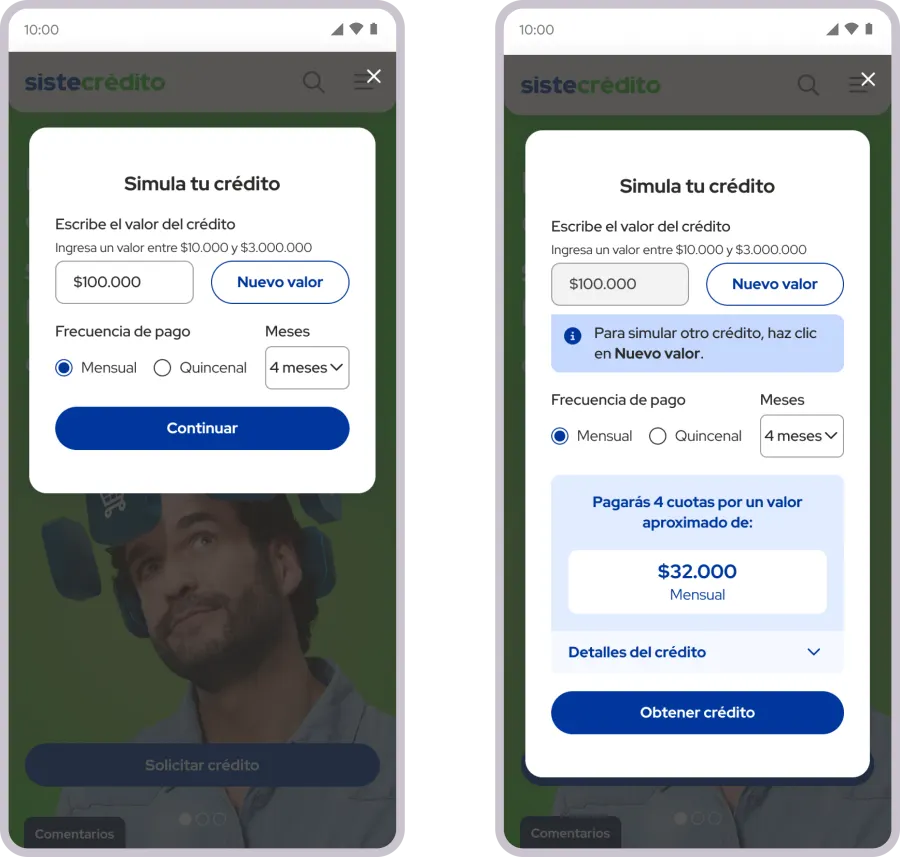
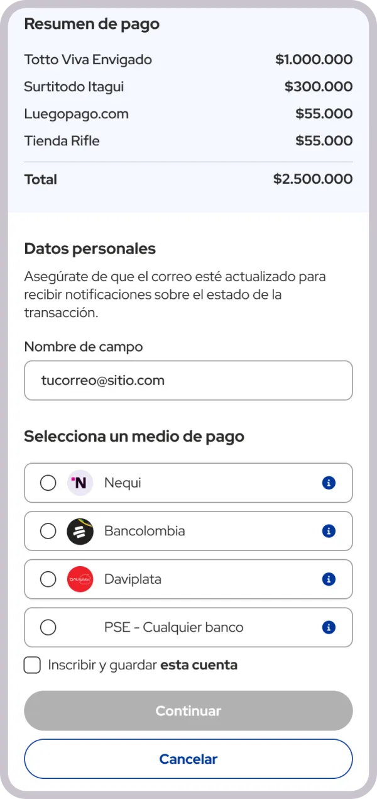
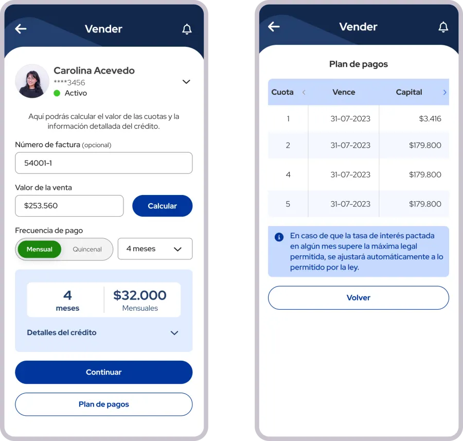

A credit ecosystem anyone can use
Sistecrédito is a Colombian buy-now-pay-later (BNPL) fintech with a large network of partner merchants. For almost three years I designed its app, website, payment gateway and Credinet, the B2B platform for merchants, with a constant challenge: users with low digital literacy, including older adults, and the risk of financial fraud.

Outcomes
BNPL app
Challenge: a single experience across Android, iOS and web, designed for older adults too, that also helped prevent fraud and build financial literacy.
- Redesign with the new brand identity, which raised perceived trust and modernity. The Google Play rating improved 7.8%.
- Ethnographic and quantitative research on how credit is perceived as a payment method; it led to prioritized features like freezing or canceling credits.
- A modular design system governed by the experience team, bringing consistency and speed to new features.
- Financial education built into interaction design.



Website and payment button
Challenge: one portal for customers, merchants, job seekers and customer service. The hardest part was the mega menu and prioritizing the most-used entries: payments, support requests and jobs.
Floating payment button: an always-visible entry integrated with the gateway, to pay without leaving the page. It went through prototypes, user tests and production experiments. 40% of site traffic used it and its CTR rose 21.2%.



Payment gateway
Challenge: a gateway acting as the payment hub for the app, Credinet and external partners (including Shopify), integrating PSE, Nequi, banks and in-house vouchers in a secure experience consistent with the design system.
- Installment selector for segmented, flexible payments.
- Clear, action-oriented UX writing at every payment step.
- Updated user personas, focused on people paying on credit through digital channels.
- Less dependence on, and cost of, an external payment method, replaced by the in-house gateway.



Credinet (B2B)
Challenge: redesign the platform partner merchants use to sell on credit. It had grown in features without a UX structure, and its users had low digital literacy.
- Onboarding with a very low learning curve: most users understood the app after a single walkthrough.
- Quick account switching on the same device, which boosted use by salespeople and enabled the gamification system.
- Assisted and customer self-service sales, adapted to each profile.
- Research with merchants that strengthened the B2B services proposition. High acceptance after pilots, despite initial resistance.



Innovation culture
I was invited to the team that built Sistecrédito's new innovation culture. We ran co-creation workshops with executives and interviews with people from every area, from the call center to VPs. That led to experiential workshops, communities of practice, the innovation-custodian role and workshops that linked the company's coffee culture with Design Thinking and Lean UX.